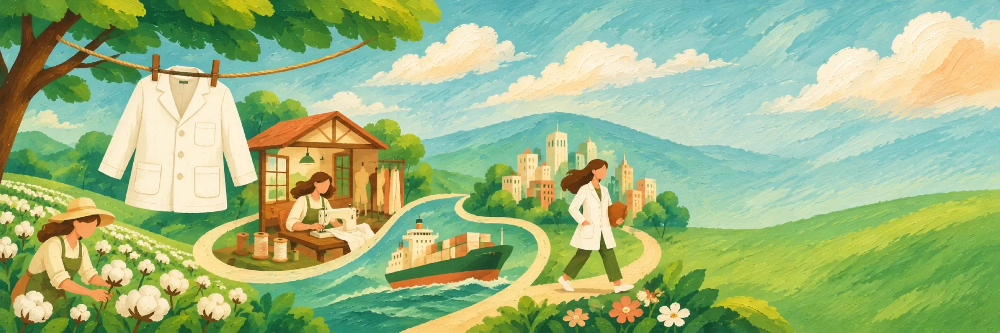

Биография
одной куртки
На вешалке висит куртка. Синтетическая, лёгкая, с флисом внутри. Куплена в магазине одежды, стоила около 2500 рублей. Выглядит как обычная вещь — но у неё есть биография, которую никто не рассказывает в момент покупки. Семь стран, двенадцать этапов, четыре вида химических соединений, несколько сотен человек — и только в самом конце я.
Этот метод называется трассировка цепочки поставок. Он позволяет пройти от магазинного ценника обратно — до нефтяной скважины, хлопкового поля или химического завода. Результат почти всегда оказывается неожиданным: не потому что там что-то сенсационно плохое, а потому что масштаб невидимого оказывается огромным.
Объект исследования: куртка-ветровка
Куртка из полиэстера с флисовой подкладкой. Ярлык: «100% polyester». Бренд российского масс-маркета. Страна производства по ярлыку — Китай. Цена — 2 490 рублей. Масса — около 450 граммов.
Что значит «100% полиэстер»? Полиэстер — это полиэтилентерефталат (ПЭТ), синтетическое волокно из нефтехимического сырья. То самое соединение, из которого делают пластиковые бутылки. Только вытянутое в тонкие нити и сотканное в ткань.
Флис внутри — тоже полиэстер, только с другой структурой поверхности. Иногда его делают из переработанных ПЭТ-бутылок, но в масс-маркете чаще — из первичного полиэстера.
Ближний Восток / Россия
Южная Корея / Тайвань
Китай (провинция Чжэцзян)
Китай / Бангладеш
Китай
Китай (Гуандун)
Шанхай / Гуанчжоу
Океан (25 дней)
Россия
Магазин
Я
После меня
Куртка за 2 490 рублей прошла через 7 стран, 12 этапов трансформации и оставила след, который переживёт её в несколько раз
Углеродный след производства одной синтетической куртки — от 15 до 25 кг CO₂-эквивалента. Это примерно столько же, сколько выбрасывает легковой автомобиль при езде на 100–150 км. За год мировое производство одежды даёт 1,2 млрд тонн CO₂ — больше, чем авиация и судоходство вместе взятые.
При этом 40% купленной одежды никогда не надевается. И менее 15% сдаётся на переработку.
Что делать с этим знанием? Не впадать в паралич. Биография вещи — не обвинение, а инструмент видения. Несколько выводов, которые из неё следуют.
Синтетика против натуральных волокон — не очевидный выбор. Хлопок тоже имеет тяжёлую биографию: он потребляет огромное количество воды и пестицидов. Шерсть связана с метановыми выбросами животноводства. Нет «хорошего» волокна — есть разные компромиссы.
Главный рычаг — количество. Производство одной куртки из натуральных органических материалов создаёт меньше проблем, чем пять синтетических кураток из масс-маркета. Самый экологичный гардероб — маленький, хорошо используемый и долго служащий.
Стирка имеет значение. Мешок для стирки синтетики (Guppyfriend) задерживает до 86% микроволокон. Это не решение системной проблемы — но способ уменьшить личный вклад в загрязнение воды.
Ремонт и перепродажа. Каждый год жизни вещи амортизирует её углеродный след. Куртка, которая служит 10 лет вместо 3, имеет в три раза меньший след на год использования. Это лучший возврат на инвестицию — и экологический, и финансовый.
«Самая дешёвая куртка — та, которую ты уже купил и которая ещё служит»
На вешалке снова висит куртка. Она не изменилась. Но теперь я вижу её биографию — семь стран, двенадцать этапов, несколько сотен людей. Не для того, чтобы чувствовать вину. А для того, чтобы принять осознанное решение в следующий раз, когда буду стоять в магазине с такой же курткой в руках.
Вещь — это не объект. Это точка пересечения множества отношений.